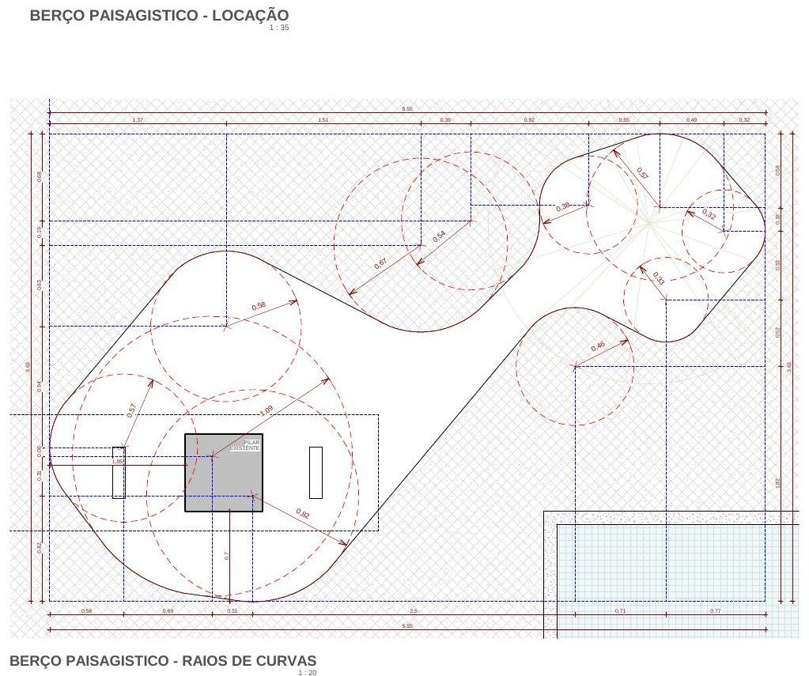

04
Casa Lisa

Casa Lisa was one of the most challenging projects: the client arrived on her third attempt with architecture offices, with a limited budget and many hesitations left by unresolved past experiences with other professionals. The brief consisted of precise interventions on an unfinished existing house.
The design and detailing of the proposed landscape elements are the high point of a project that managed to meet the wishes of a client with an extremely refined eye and strict demands of functionality and budget.
“Gardens did not begin with me, and they will not end after me. I hope there will be other people interested in the perpetuation of plants.”Burle Marx
Process
From sketch to construction set.
